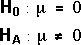

Testing the mean
In an earlier chapter, we described a t-test for whether the population mean underlying a random sample is equal to some known constant, k:

These hypotheses were assessed with the test statistic

The t-value was compared to the t distribution with (n - 1) degrees of freedom.
A different approach
We now consider another approach to testing these hypotheses, based on the sums of squares,
The hypotheses can therefore be assessed by asking whether the sum of squares due to the mean is 'unusually large'.
Analysis of variance table
To assess the size of the sum of squares due to the mean, we need a test statistic based on it whose distribution is known when H0 is true.
The sum of squares table is extended with a column of mean sums of squares (the sums of squares divided by their degrees of freedom) and an F-ratio that is the ratio of the mean sums of squares for the mean and about the mean.
This table is called an analysis of variance table.
Distribution of the F ratio
If the null hypothesis holds, we can use the results at the end of the previous section to state that the F ratio has an F distribution with (1, n - 1) degrees of freedom.

Simulation
We will build up the distribution of the F ratio for testing whether a population mean is zero,

The diagram below takes samples from a normal population with mean µ = 0.
Since the null hypothesis holds, the F ratio has the F distribution shown at the bottom of the diagram. Click Take sample several times and note that the sampling distribution of the F ratio matches the theory reasonably well.
Change the sample size and repeat the simulation. Note that the F ratio always has a very skew distribution but its right tail is longer when the sample size is low.